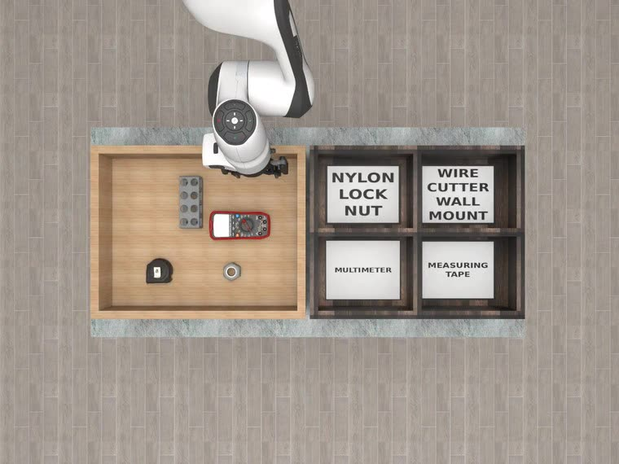
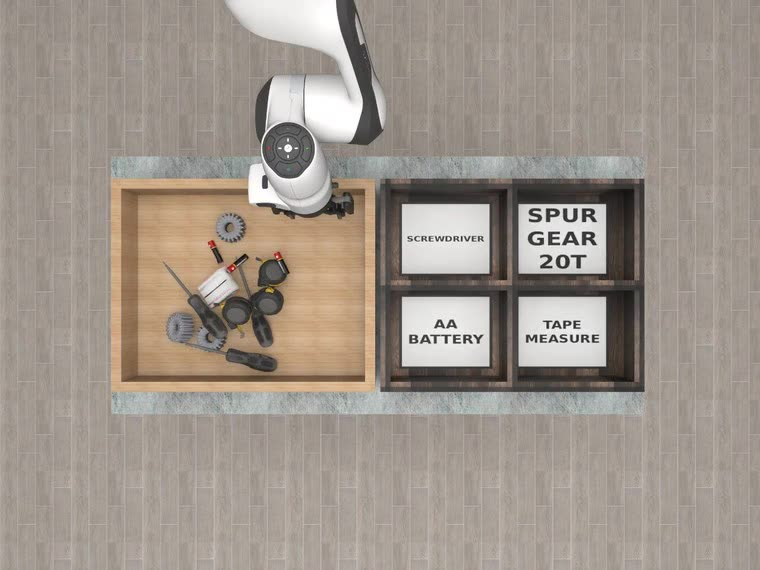
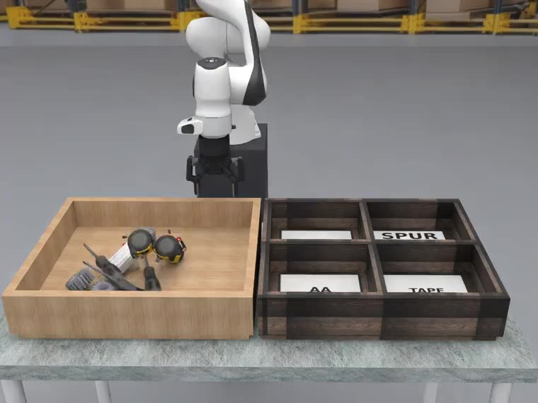
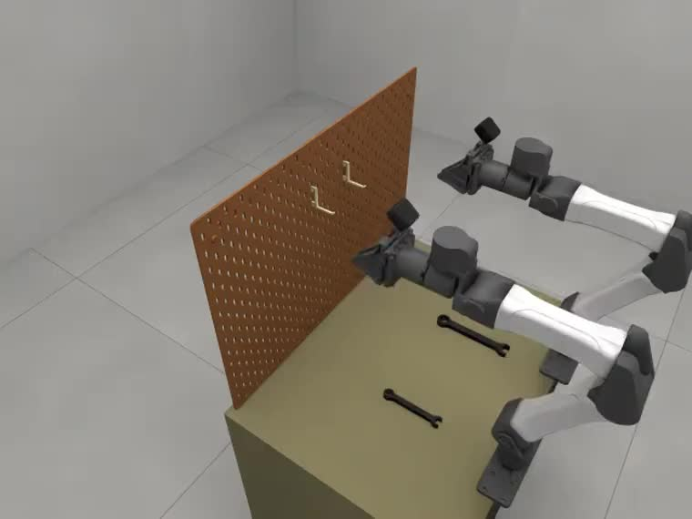
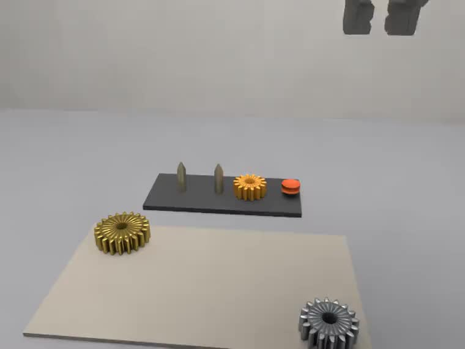
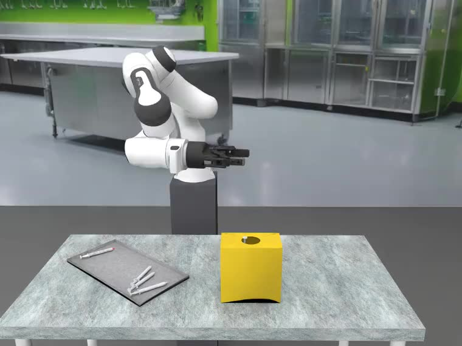
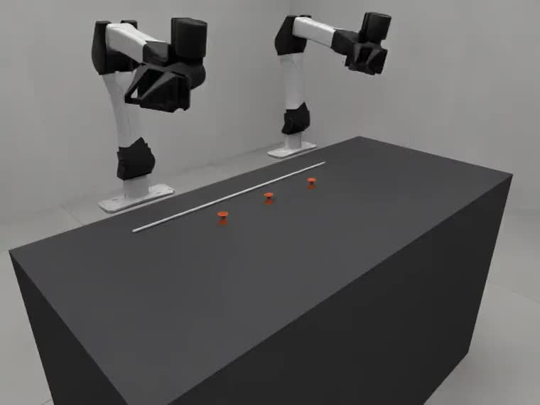

A benchmark for agentic robotics
Same task.
Changing conditions.
How reliably can a robot repeat a job as objects, layouts and physical conditions change?
Variational Automation Benchmark for Agentic Robotics
Code available by Nov 9 · Report forthcoming
Authors & affiliations
*Equal contribution
 1
2
1
2
 3
3
01 / The central idea
Keep the objective.
Vary the conditions.
In Tool Sorting, the goal stays the same. Level 1 separates the tools; Level 2 introduces clutter and occlusion. A policy must handle different instances of the same job.


Initial scenes shown above. Controlled seeds make the variations repeatable.
Explore the variations02 / The task suite
Six jobs. Different challenges.
From tool handling and precision assembly to flexible cables. Tasks 1–4 use a single-arm Franka; tasks 5–6 use a bimanual YAM.

01Tool Sorting
Sort tools into the right bins as tool types, poses and clutter change.
Execution + L1 / L2 variations
02Tool Hanging
Place tools on a pegboard as tools, holders and their poses change.
Execution + L1 / L2 variations
03Gear Meshing
Assemble meshing gears with different counts, sizes and starting poses.
Execution + L1 / L2 variations
04Syringe Packing
Pack syringes as clutter, object counts and container geometry change.
Execution + L1 / L2 variationsCable Insertion
Align and insert a connector as connector and port poses change.
Execution + L1 / L2 variations
06Cable Routing
Route a flexible cable as peg layouts, routes and cable conditions change.
Execution + L1 / L2 variations03 / The evaluation
A repeatable path
from task to evidence.
- 01
Define the job
Specify the robot, assets, initial conditions and measurable success criteria.
- 02
Sample the variation
Generate seeded instances within controlled, physically admissible bounds.
- 03
Evaluate and diagnose
Measure success and cycle time. Inspect decisions, states and contacts when an execution fails.
04 / What the baselines show
Skills help.
Reliable composition is still hard.
GaP outperforms the general-purpose coding agent in 11 of 12 task–difficulty conditions, but remains below human-authored graphs on Newton in every condition.
Gear Meshing: success rate
A selected example from the full evaluation.
GaP and the human-authored Newton graphs share the same perception, skill, planning and execution modules. The comparison with Claude Code evaluates the combined system.
Full results & methodology →05 / Explore further
Bring your system to the benchmark.
Explore the task environments, seeded instance sets and reusable skill library.
Code available by Nov 9. Simulation platforms: RoboSimStudio and NVIDIA Isaac Lab Arena.